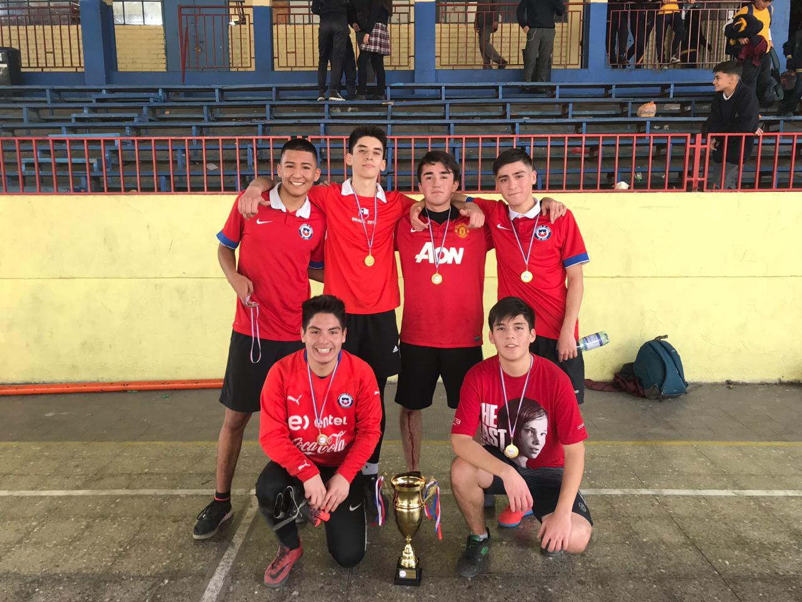
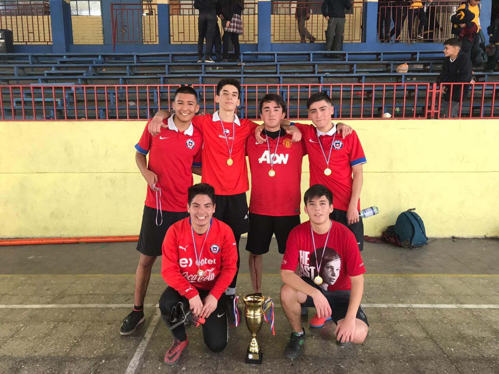

Nombre: Gamalier Osses
Edad: 23 años
Genero: Masculino
Fecha de Nacimiento: 20/03/2002
Nacionalidad: Chilena
Altura: 1.7 metros
Peso: 75 kilos
.png)
Información personal
Nombre: Gamalier Osses
Edad: 23 años
Genero: Masculino
Fecha de Nacimiento: 20/03/2002
Nacionalidad: Chilena
Altura: 1.7 metros
Peso: 75 kilos
Hobbies
Deportes
Voleyball:
Jugador aproximadamente desde los 12 años, representante de su colegio durante su adolescencia. Posteriormente fué Jugador del club amateur "Halcones HVC", hasta su retiro a causa de la Pandemia del año 2020. De posición polivalente, finalmente se especializó en la posición de armador, siendo el armador titular del club en competiciones comunales. No tuvo la suerte de ganar títulos con el equipo.
Futbol:
Jugador desde que tiene memoria, fué representante de su curso en su colegio en todos los niveles, campeón de 8vo y 4año respectivamente, de babyfutbol. Posteriormente, fué Jugador casual hasta hace aproximadamente 1 mes, ya que está inscrito en un campeonato comunal de fubol 11. Su posición favorita es de 5. Su carrera está actualmente en desarrollo.
 

Formulario
Total: $0
Gracias por ver